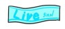

ファンライトアカデミー
Ready Steady Go! : 水瀬いのり
作詞：藤林聖子 作曲：藤永龍太郎(Elements Garden)
Mustグッズ：タオル，盛り上がる心
: タオル
 : 掛け声
: 掛け声
イントロ
縦振り
繊細なきみの心を かき乱してしまうもの Wow-oh-oh-oh
(wow-oh-oh-oh)
縦振り
吹き飛ばしたいけどまだ 言葉を並べてあれこれ
縦振り
言えるほどオトナじゃなくて Wow-oh-oh-oh
(wow-oh-oh-oh)
縦振りだまってしまうだけなの
大きく縦振り Be All right!
風は あしたから吹いてる Be All right!
縦振り
きみの真っ白な シャツをほら つばさみたいにはためかせる
サビ
行くよ！
頭上で回すFly high, fly high
きっと飛べるよ
(Ready steady. go!)
もっと回す
涙の跡がいつだって 次のスタートライン
(Ready. go!)
ひたすら回すきみと Fly high,
fly high 憧れてたあの夢まで
まだまだ回す
続くように Brand
new なストーリー (Go! Ready steady,
go!)